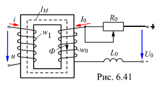
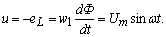
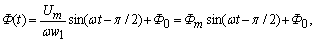
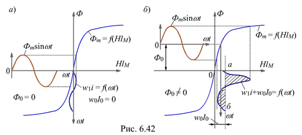

6.5.1.2. Управляемый дроссель
Простейшая управляемая нелинейная индуктивная катушка (управляемый дроссель) изображена на рис. 6.41. Она состоит из двух обмоток w1 и w0, намотанных на ферромагнитный сердечник. Площадь поперечного сечения сердечника SМ (м2), длина средней магнитной линии lМ (м).
Обмотка w1 включена в цепь переменного тока, и по ней протекает переменный ток i, содержащий первую и высшие гармоники. Обмотка управления (подмагничивания) w0 подключена к источнику постоянного напряжения U0 последовательно с потенциометром R0. По обмотке w0 протекает постоянный ток I0 » U0 / R0. Для ограничения в обмотке w0 переменного тока, вызванного индуктированной переменным магнитным потоком ЭДС, в неё включена дополнительная катушка с индуктивностью L0.
Если пренебречь относительно небольшим активным сопротивлением обмотки w1 и потерями мощности в сердечнике, то синусоидальное напряжение u уравновешивает ЭДС самоиндукции, взятой с обратным знаком:  Отсюда магнитный поток

где Фm = Um /(ww1) – амплитуда переменной составляющей магнитного потока; Ф0 – постоянная составляющая переменного потока.
Принцип управления переменным током i путём изменения постоянного тока I0 в обмотке w0 поясним с помощью рис. 6.42, а и б, на которых кривые Ф(НlM) представляют собой зависимости потока в сердечнике от суммарной МДС (магнитного напряжения) НlM = H1MlM + H0lM = F = w1I + w0I0.

Построения на рис. 6.42, а соответствуют случаю, когда I0 = 0 (Ф0 = 0), а на рис. 6.42, б – когда I0 ≠ 0 (Ф0 ≠ 0). На обоих рисунках переменная составляющая потока Фmsinwt одинакова. Кривые F = HlM = w1i + w0I0 = f(wt) построены с учетом значения Ф0. Ось времени для этих кривых направлена вертикально вниз. Ток i не содержит постоянной составляющей, т. к. в цепи обмотки w1 нет источника постоянной ЭДС и выпрямителей.
Проведём прямую а - б (рис. 6.42, б) так, чтобы среднее значение тока i за период от wt = 0 до wt = 2p было равно нулю, т. е. чтобы заштрихованные площади кривой w1i выше и ниже этой оси были одинаковыми. Прямая а - б является нулевой линией для кривой w1i = f(wt) и удалена от оси ординат на расстояние F0 = w0I0.
Анализ кривых w1i показывает, что при Ф0 ≠ 0 кривая переменного тока несимметрична относительно оси времени, содержит первую и высшие гармоники, амплитуды которых зависят как от амплитуды Фm, так и от постоянной МДС F0 = w0I0: чем больше w0I0, тем больше амплитуды гармоник тока i: первой I1m = H1MlM / w1, второй I2m = H2MlM / w1 и т. д.